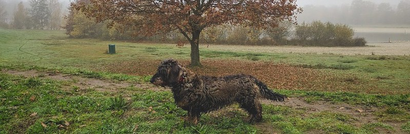

I’m writing this post from my compulsory quarantine hotel in Hong Kong, where I started my postdoctoral fellowship this month. However, by being secluded from the outside–I literally cannot open the window and take a breath of fresh air, luckily the air conditioning system is working optimally–has made me realize how much I have missed just being in Belgium at home during my PhD in Taiwan. Here are some moments that have stood out for me.
Meeting friends
Due to the ongoing pandemic, and Belgium’s less than optimal situation, I only managed to see perhaps a tenth of the people I was looking forward to meet. Luckily, I did get to meet the ones I met, and I want other people to know that I did yearn for meeting up with them, but unfortunately the situation become worse over time, resulting in nasty measures like the closing of restaurants and bars, museums, or almost anything really.
The first friend I met up with was Cedric, who took me to the “city” where we went to high school together.

The next time I saw him, he brought my dear old classmate and his dear old twin brother Ruben, who were just stopping by for a socially distanced hi.

Later on I would visit Cedric in Brussels, where we went to the museums (after they opened again in January!). It was also an opportunity to use the free train tickets that Belgium government made the national railway company give to each citizen that wanted one. Of course, Belgium’s gonna Belge, and the railway company made it so that you had 12 free trips (hooray!), but divided over six months with two trips per month, basically reducing the value of such a gift to nothing. Still, it took me to Brussels, the capital. This is Cedric and me on the Grand Place, not far from Manneken Pis, which was too small to take a good picture of. Also, please don’t mind the coronacoupe hairstyle. It was all the rage.

One of the most fun activities I did back home was playing boardgames. Here’s one of Cedric losing to me because I put the word “verzande” (e.g., verzande bedding) for a score of 96 points. And all of this because he wouldn’t let me play quenya. Little bean comes for his little wage.

But spite aside, I had such a great time. So great that in my last days I took yet another railway company-sponsored trip to Ghent, to visit Cedric and Isabelle. Here is us at the fortress that occupies the middle of the city.

I mentioned Ruben before, and that brings me to when the twins visited me in our little village, and we could enter the little chapel! Lucky us. Here’s camerashy yet expert photographer Ruben’s picture of the inside of the chapel.

But I did meet up with Ruben once more as well, together with another friend of ours, Margaux, whose wedding was so beautiful a few trips to Belgium ago. This is a covidproof picture of Margaux and her sister (Margaux is also my dentist).

And here are Margaux, her hubby Kristof and their daughter Emma, and Ruben, and me on the Kalmthoutse Heide, drinking cava on the heath. Hashtag #heathcliffitsmecathy

I have some fond memories of the Kalmthoutse Heath. For instance, one time we did a sponsored 10K trek for charity when I was in primary school. But that was a spring time (don’t go there in summer; the heath tends to be ablaze then); now is winter. There was a solemn beauty emanating from the seemingly endless stretches of grassy patches. Very beautiful.

One of the other first groups I got to see where my classmates from Sinology, way back when by now. We went to our favorite local restaurant in Leuven, De Werf (the construction site), where we reminisced about the good old student times and also talked about what everybody had been up to. Well, I guess, it was mostly me who wanted to know because being away for so long made me lose touch to some degree. Here’s a covidian photograph.

And because Mandy couldn’t join us, I decided to become her cuddle contact (knuffelcontact) and visited her little family in their new home. If you visit Mandy, you never go home hungry, nor angry. Not even hangry. Here’s a picture of us in the first 5% of their long garden.

Meeting with family
Of course I got to see some family members – yet not as many as I had wanted (My family is actually kind of large, like, at least 13 cousins +- 2). Anyway, here is the “small side” of the family. Picture taken with social distancing rules in mind.

I also got to hang out with my dad quite a few times. For instance, here we went to the Schorre, where every year (well I guess not in 2020 and probably neither in 2021) they do Tomorrowland. I guess people will just have to turn on youtube and watch their own computer play songs. The site, however, was kinda magical. They put up these giants on the domain. Here is a picture of me pointing at a giant who is pointing at the stars. That day became a bit of an ad astra per aspera because I tripped and my foot hurt for a few weeks after.


That last picture was also taken on the same site, but it looks completely different right?! There was a watchtower whence one could observe the Atomium, the Belgian equivalent of the Eiffel tower. My dad says he frequently rides his mountainbike from this ledge.
Of course, most time I spent at home with my mom. And because it became a kind of everyday comfort, I don’t have that many pictures. But I thoroughly enjoyed the TV shows we binged together, the meals we shared and the daily routine I found myself in. Except for vacuuming. But on the other hand, my mom became a proish barrista, whipping up lattes left and right.


Most pictures of her also feature our new dog Whoopi, named after Caryn Elain Johnson.


So yeah, the rest of this section is just going to be Whoopictures. For instance, Whoopi discovered she likes the armrest of the sofa.

And she likes biting my hand, for fun of course.

She loves lying on her back.

Or sleeping with her body on my shoulder, as if I were a pirate and she my parrot.

She discovered the power of blankets™️.

And she has this stuffed sloth, what we call her Aapje. Everyday she brings over her Aapje to play with.

Poetic intermezzo: Spleen
Ik zit mij voor het vensterglas
onnoemlijk te vervelen.
Ik wou dat ik twee hondjes was,
dan kon ik samen spelen.

One time I was walking her and she saw her own reflection and we had to stand there for an uncomfortably long time. This is a nice segue into the next section.

A reappraisal of my hometown
There is something powerful in the notion of being home, but often this sentiment only emerges when you’re away from home. Just like so many other things, the feelings attached to it are only noticed in its absence. Musically it has inspired one of my favorite albums and also a song I like to perform in the confined space of a Taiwanese karaoke room.
Nostalgic intro aside, the ongoing pandemic made it hard for me to do a lot of things apart from taking daily walks with my dog. But they were good opportunities for rediscovering the countryside of Loenhout. Because my self-imposed sabbatical basically was planned for 4 months but was made longer due to certain factors I got to stay 5 months, and see how my home transformed from summer to autumn to winter.
From the castle of Loenhout (btw I have a friend who owns a carpet that came from that castle!), to a first breezy walk, to a walk between the flower fields. A pity they weren’t used in the yearly flower parade.


I kind of forgot what autumn looked like because we don’t do that in Taiwan, nor Hong Kong. Here are some beautiful trees.


One season later, the same street gets a completely different look. But I appreciate all, having walked there almost every day.


Perhaps one of the most fun things was being able to (wow that is some serious academic sentential elongating) (re)discover nice roads to walk on. Like the sports fields – supposedly on a larger terrain than the training field of Real Madrid.


I got to see beautiful sunrises and sunsets:


I got to experience the quiet of the countryside at night (okay there was a curfew which helped) and went to places to actually find some stillness, such as the alley behind a local school, full moons through bare trees, a circular graveyard for nuns, and the place where my grandfather’s ashes were enterred last year.


Matome
Matome is Japanese for ‘conclusion’. Somehow it feels fitting. I am thankful for the period, longer than anticipated, that I could spend at home. It gave me some much needed time to just be and only do light work after the stress of finishing my dissertation. I appreciate the thought of being home even more and knew that I needed to say goodbye yet again. But this time I would be taking a much deeper part of it with me, a somewhat unexpected side effect of covid and being forced to turn inwards.
The final pictures are of my (ex?-)municipal center, het Gemeentehuis van Wuustwezel, also in a former castle, has become a vestige for my time spent growing up and leaving the nest.


Towards new adventures!